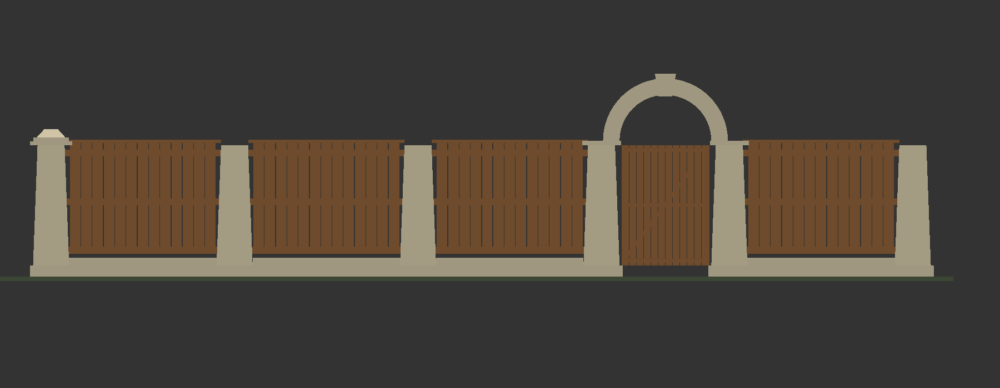
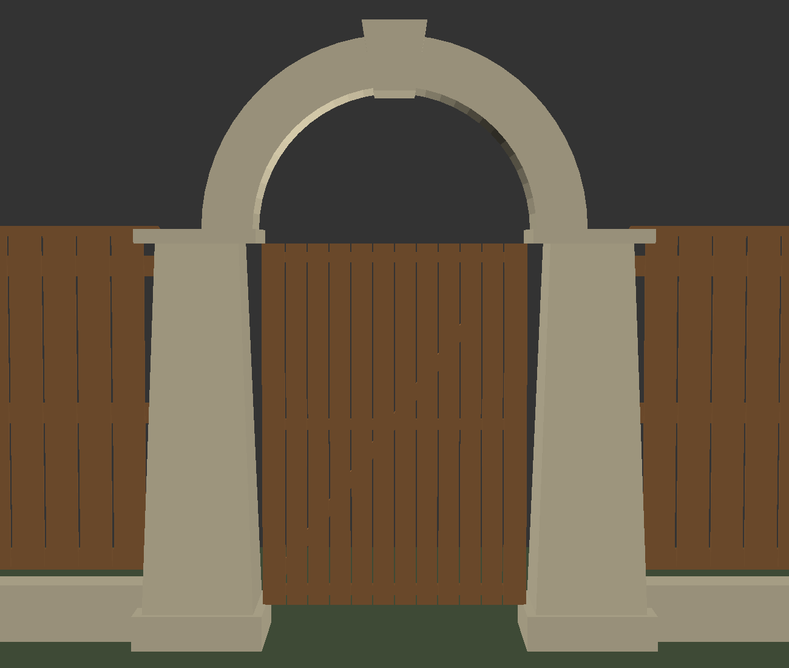
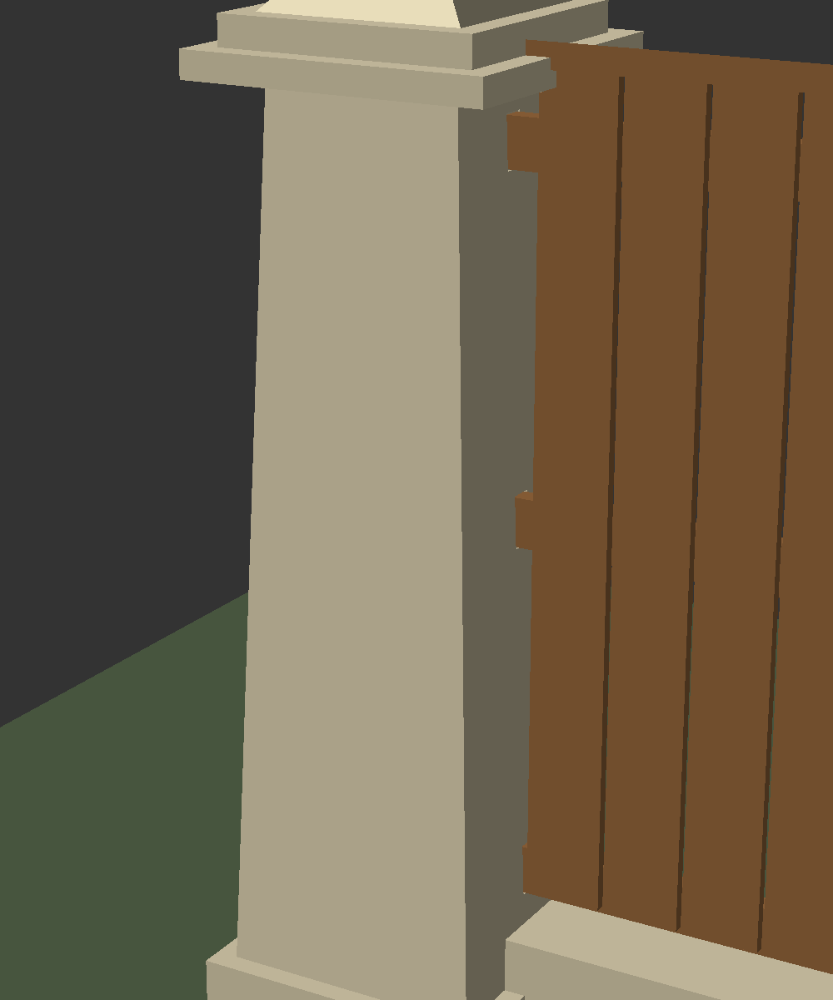
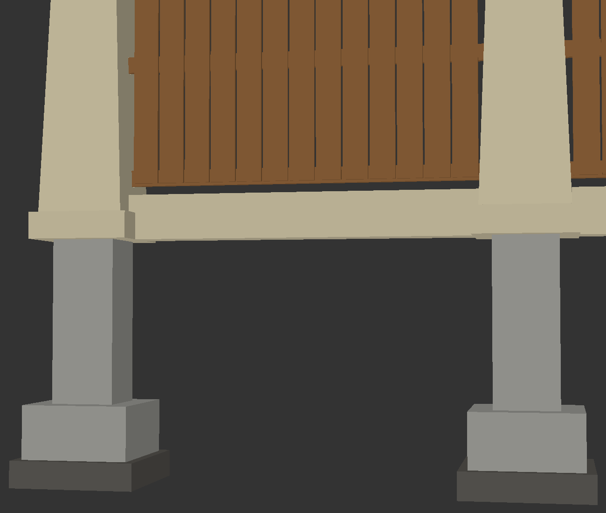
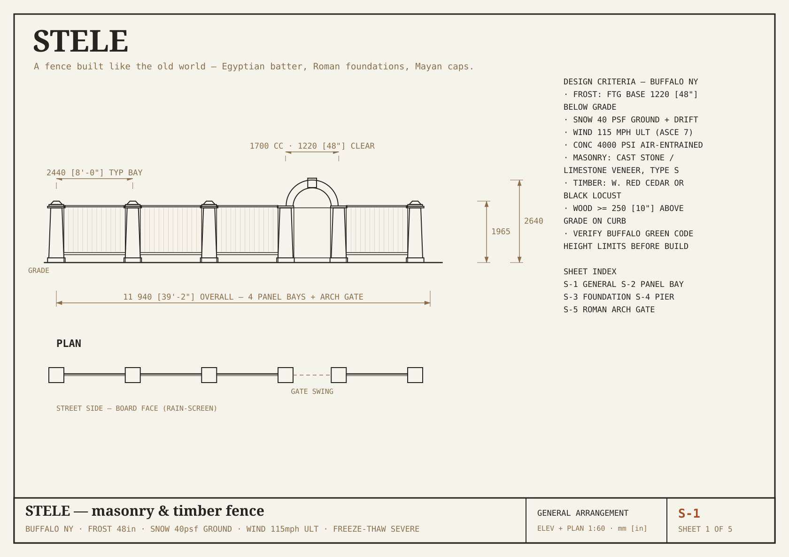
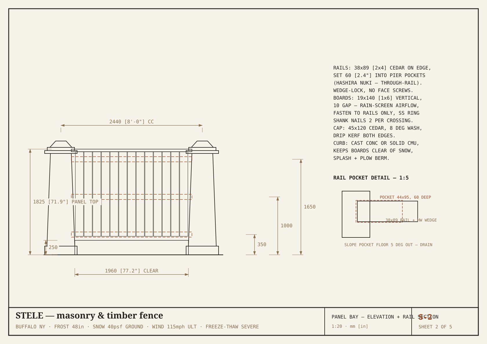
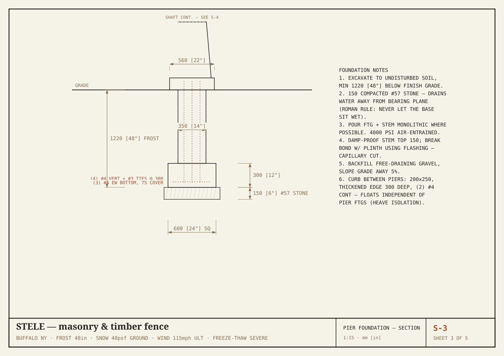
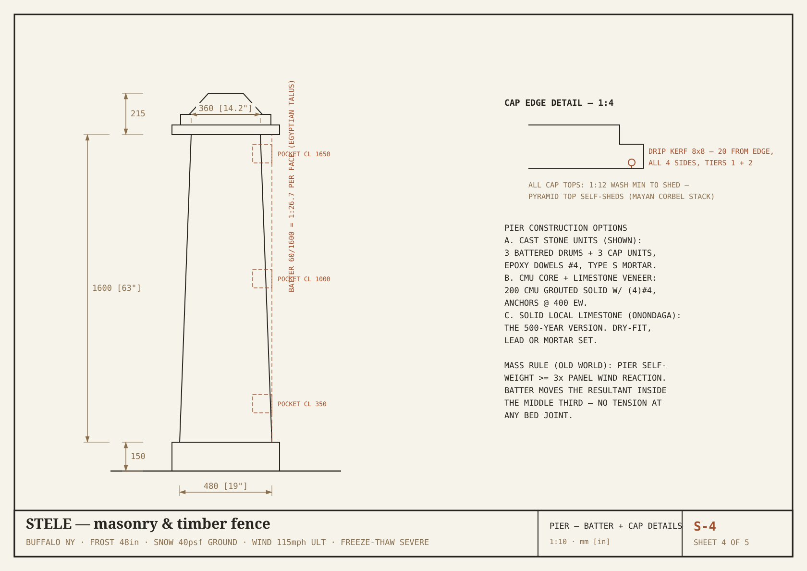
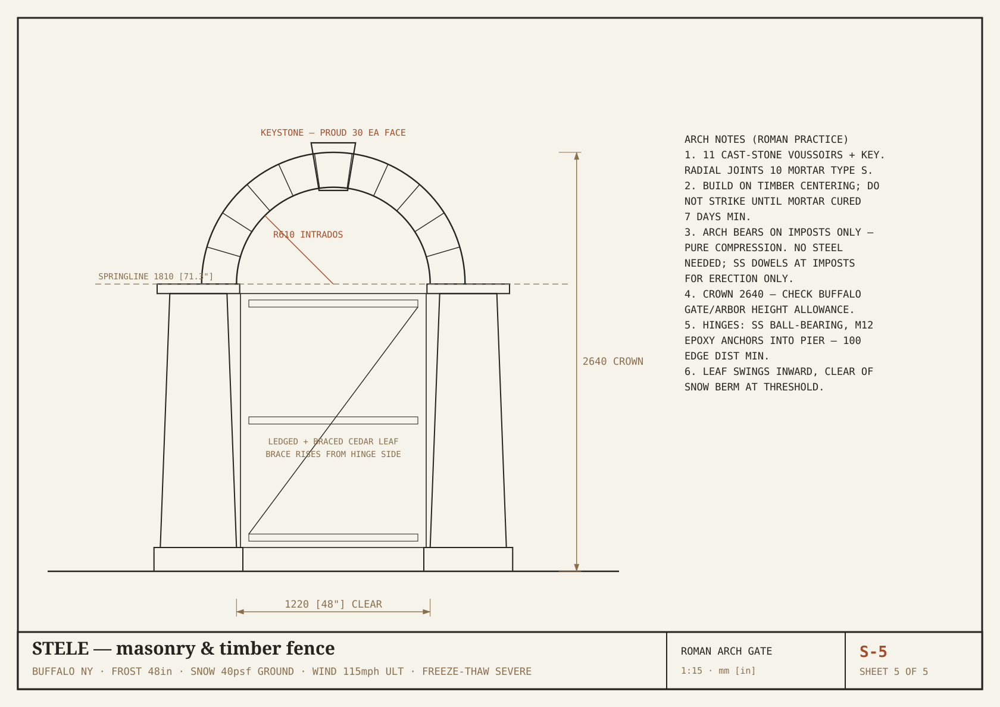

1Executive summary
This report packages a complete, buildable fence design: 3D CAD models, dimensioned construction drawings, materials schedules, sequencing, budget ranges, and the permit path — ready to hand to yourself, a mason, or an inspector.
The design problem. Buffalo weather destroys ordinary fences by three routes: wind racking off the lake, frost heave lifting shallow posts, and freeze-thaw cycling splitting wet wood and concrete. Most fences fail at fasteners and at grade — the two places this design refuses to rely on.
The answer. Two coordinated systems:
- STELE — the primary build. Six battered masonry piers on 48″ frost foundations carry four timber panel bays and a pure-compression Roman arch gate. Old-world principles do the structural work: Egyptian batter keeps every joint in compression, Roman foundations keep the base dry and below frost, Mayan corbelled caps and plinths shed ice and lift wood clear of snowpack.
- HASHIRA — the timber method used inside STELE's bays (and standalone for reinforcing any existing wood fence): through-rails seated in pockets, wedge-locked hand-cut joinery, cladding as a rain screen that carries no load.
Status. Geometry is fully modeled and internally consistent — the plan sheets are generated from the same parameter file as the 3D model. Two items remain deliberately open for site verification: your Green Code district's height allowance and an engineer-of-record review of the foundations and arch.

2Site & climate criteria
Every dimension in the drawings traces back to one of these numbers.
| Load / hazard | Design value | Design response |
|---|---|---|
| Frost depth | 48″ (1220 mm) | Footing bearing at 48″ on 6″ compacted #57 stone; Erie County minimum is 42″ — designed past it |
| Ground snow | 40 psf + lake-effect drift | Timber starts 12.6″ above grade on masonry curb; all masonry tops washed or stepped; no flat water-holding surfaces |
| Wind | 115 mph ultimate (ASCE 7) | Pier self-weight ≥ 3× panel wind reaction; batter keeps the resultant in the middle third — no uplift hardware needed |
| Freeze-thaw | Severe (>60 cycles/yr) | Air-entrained 4000 psi concrete; drip kerfs under cap tiers; capillary break at stem/plinth; rain-screen cladding gaps |
| Soil movement | Clay-silt, heave-prone | Curb wall floats independently of pier footings — shallow movement cannot rack the piers |
| Snow removal | Plow berms at property line | Masonry curb takes the berm hit; boards and rails stay above the abuse zone |
Old-world rule of thumb
Rome's surviving walls, Egypt's pylons, and the platforms of Tikal share one trait: they manage water before they manage load. Every detail in this design sheds, drains, or elevates — strength follows dryness.
3System A — STELE (primary build)
Masonry piers + timber infill + arch gate. 39′-2″ as modeled; the parameter file rescales to any run length.


Key dimensions
| Element | Dimension | Note |
|---|---|---|
| Panel bay spacing | 2440 mm · 8′-0″ cc | 4 bays as modeled |
| Panel top | 1825 mm · 71.9″ | Under the common 6′-0″ residential limit |
| Pier cap top | 1965 mm · 77.4″ | Piers typically assessed separately — verify district |
| Gate clear width | 1220 mm · 48″ | Mower / cart / snowblower passage |
| Arch crown | 2640 mm · 8′-8″ | Arbor-class feature — verify allowance |
| Footing | 600 sq × 300 at −1220 | 24″ × 12″ pad, 48″ deep |
| Pier shaft batter | 1 : 26.7 per face | 480 → 360 mm over 1600 mm |

4System B — HASHIRA (timber joinery)
The joinery vocabulary inside STELE's bays — and a standalone method for reinforcing an existing wood fence without tearing it down.
Rails pass through their supports and lock with wedges or pegs, so wind shear becomes wood-on-wood compression instead of fastener withdrawal. Cladding hangs as a rain screen and is never asked to brace anything. Six hand-cut joints cover every condition:
| Joint | Role | Where it appears |
|---|---|---|
| Nuki 貫 | Through-rail, wedge-locked | All rails; STELE pier pockets use the same seat |
| Watari-ago 渡り顎 | Shouldered anti-twist rail | Wind-exposed mid-rails, gate-adjacent bays |
| Hozo ほぞ | Drawbored mortise & tenon | Gate frames, post caps, lintels |
| Ne-tsugi 根継ぎ | Foot splice | Rescuing rot-footed posts in an existing fence |
| Ari-kake 蟻掛け | Dovetail lap | Corners without steel plates |
| Kama-tsugi 鎌継ぎ | Sickle scarf | Lengthening rails over supports |


Full joint catalog with cutting notes: HASHIRA design guide.
5Engineering rationale
Why the batter works (Egypt)
A fence panel in 115 mph wind delivers a horizontal reaction at each pier. A straight-sided pier resists by weight alone; if the overturning moment pushes the resultant force outside the middle third of the base, the windward joint goes into tension — and mortar joints in tension fail by frost wedging within a few winters. Battering the faces at 1:26.7 widens the base and re-centers gravity so the resultant stays inside the kern under full design wind. No bed joint ever sees tension, so there is nothing for ice to pry open.
Why the arch needs no steel (Rome)
The semicircular arch converts the gate span into pure compression delivered to the imposts. Cast stone in compression is effectively immortal in this climate — it is tension and shear that freeze-thaw attacks. Stainless dowels at the imposts are for erection alignment only; the geometry carries the load.
Why the foundations are boring on purpose (Rome again)
48″ bearing on drained crushed stone is deeper than code demands. The extra 6″ over Erie County's minimum buys insurance against the freakish frost years, and the gravel pad drains meltwater away from the bearing plane so the soil under the footing never becomes an ice lens.
Why the wood survives (Maya + Japan)
The Mayan move: raise everything organic onto a masonry platform, above splash, snowpack, and plow berms. The Japanese move: joints that flex slightly and drain freely, no trapped water, no load path through a nail. Between them, cedar that would rot in 10 years at grade lasts 40+ in the air.
Failure-mode audit
Wind racking → compression joints, mass piers. Frost heave → 48″ bearing, floating curb. Freeze-thaw spalling → air-entrained mix, kerfs, washes. Rot → elevation + rain screen. Fastener corrosion → geometry carries load; the few fasteners are stainless. Snowplow impact → sacrificial masonry curb.
6Construction documents
Five A3 sheets, dimensioned in mm with inch callouts. Generated from the same parameter file as the 3D model — drawings and geometry cannot disagree. Print at 100% on A3 (or 71% on A4/Letter).





7Materials & procurement
| Item | Spec | Qty (39′ run) | Sourcing notes — Buffalo area |
|---|---|---|---|
| Concrete | 4000 psi, air-entrained 5–7% | ~2.5 yd³ | Small-batch ready-mix or bag mix; air entrainment is the non-negotiable spec |
| Crushed stone | #57, compacted | ~1 yd³ | Any aggregate yard |
| Rebar | #4 + #3 ties | ~180 lf | Grade 60 |
| Pier masonry | Cast stone units or CMU + veneer | 6 piers | Cast-stone plants will run battered drums from shop drawings (S-4); or CMU core + Onondaga limestone veneer — the regional stone, quarried since the Erie Canal |
| Arch set | 11 voussoirs + keystone, cast stone | 1 set | Same plant as pier caps; supply template from S-5 |
| Cedar | Western red, S4S, KD | 12× 2×4, ~52× 1×6, 4× cap stock | Black locust upgrade for rails if available — regional and nearly rot-proof |
| Fasteners | 316 SS ring-shank, M12 epoxy anchors | minor | Only the cladding and hinges use fasteners at all |
| Flashing | Self-adhered + metal drip | 6 piers | Capillary break at stem/plinth line |
Full schedules: STELE materials · HASHIRA stock & finish.
8Budget planning ranges
Planning-grade 2026 ranges for the 39′ run as drawn — confirm with local quotes. Masonry labor dominates; the timber bays are genuinely DIY-friendly.
| Scope | DIY materials | Contracted | Notes |
|---|---|---|---|
| Excavation + foundations | $900 – 1,400 | $3,000 – 5,000 | 6 piers, 48″ deep; auger rental vs. crew |
| Piers + curb (cast stone) | $4,500 – 7,000 | $12,000 – 18,000 | Cast stone units + Type S; veneer route similar |
| Arch set + erection | $1,200 – 2,000 | $3,500 – 6,000 | Includes centering lumber |
| Timber bays + gate leaf | $1,400 – 2,200 | $3,000 – 4,500 | Cedar; black locust rails +20% |
| Flashing, anchors, misc | $300 – 500 | included | |
| Total | $8,300 – 13,100 | $21,500 – 33,500 | Hybrid (you do timber, mason does stone) lands mid-range |
Cost control levers: shorten the run (piers price per unit), swap cast stone for CMU + stucco with cast caps only, or build STELE piers at the gate and corners with HASHIRA all-timber bays between.
9Permits & code path — Buffalo
- Confirm parcel zoning district and fence rules in the Buffalo Green Code (Unified Development Ordinance) — residential fences are commonly limited to 6′ in side/rear yards and less in front yards; the 71.9″ panel top is designed to comply, but pier caps (77.4″) and the arch (8′-8″) may be assessed as gate/arbor features — ask Permit & Inspection Services before fabricating the arch.
- Survey or locate property lines; masonry cannot be moved later. A stake survey is cheap insurance next to $10k of stone.
- Call 811 (Dig Safely New York) at least 2 business days before excavation — six 54″ holes qualify.
- Building permit application with plan sheets S-1 through S-5; expect a request for an engineer-of-record stamp on the foundation and arch — budget $500–1,200 for review of these documents.
- Historic district or corner-lot sight-triangle checks if applicable.
- Schedule footing inspection before pour (open-hole), and keep the concrete delivery ticket showing the air-entrained mix.
10Maintenance calendar
| When | Task | Why |
|---|---|---|
| Every spring | Walk the line: probe mortar joints, check kerfs and washes are clearing water, confirm curb hasn't trapped debris | Catch freeze-thaw damage while it's cosmetic |
| Every 18–24 mo | Re-oil timber end grain; re-seat any loosened wedges (tap, don't glue) | End grain is where cedar drinks |
| Every 5 yr | Repoint any failed mortar joints, Type S; reseal cast stone caps if using sealer | Joints are the sacrificial element — by design |
| After major storms | Check gate leaf swing and hinge anchors | The leaf is the only moving part |
| Never | Paint the masonry or caulk the rain-screen gaps | Trapped moisture is the only enemy this design can't fight |
Designed service life: masonry 75–100+ years with repointing; timber infill 30–40 years, replaceable bay-by-bay without touching stone — the rails slide out of their pockets the same way they went in.
11File index & reproducibility
Everything is parametric and regenerable. Edit the parameter block, re-run, and the model, exports, and drawings stay in sync.
Design pages
STELE design page HASHIRA design guide
CAD models
stele.FCStd STEP assembly stele_fence.py hashira bay.scad
Plan sheets
{kind=link}
{kind=link}
{kind=link}
{kind=link}
{kind=link}
Regenerate everything
./scripts/build_stele.sh # FreeCAD model → exports → renders → plans
./scripts/render_hashira_cad.sh # OpenSCAD joint models → renders/STLs
Disclaimer
This report is a design package, not a stamped engineering document. Foundation and arch details require review by a licensed engineer in your jurisdiction before construction. Verify all code limits with the City of Buffalo before fabrication.